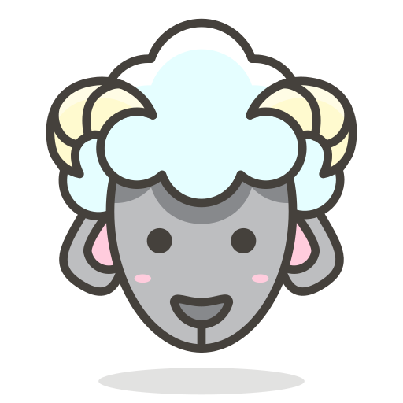

Before you start, Please pet my head first. Thank You!

Hello there! I'm Sheep
I hope you'll get something out of my story
Now I'll let my author introduce himself
( read text below )
Hi, I'm Mark Jun Saliente and welcome to my blogsite.
I'm currently taking a short-term training course in Web Development and if you want to know more about me, read on...
ABOUT ME
I'm Mark Jun Saliente
BSCPE graduate from STI College-Naga
an aspiring web developer
(but I plan to learn android development too)
I came across web development last 2020 because of a friend
But I have only started learning web development recently
I haven't had much experience so far but I am eager to learn
( I think that's enough background. Now please read my short story )
Chapter 1: The Upbringing
1 One day at the city of Naga, a baby sheep was given birth by his mama.
2 He was brought back home and grew up in his hometown Pili, a known town from the region of chili.
3 His family loved him so much they gave him the utmost care so he grew up as a good sheep beyond compare.
4 He seems like any ordinary sheep at his age, very cheerful, loving and curious but at times he is so serious.
5 He loved to question everything from a very young age but most of his peers are not on the same page.
6 He often ask his mom anything on a whim and his mom loved that about him.
7 Little by little, He started to learn different kind of things, from reading, counting, and even sketching.
8 All of it has helped him excel somehow at school, a few peer thinks he is cool.
9 He made his parents very proud but shortly after, he realized it is all he can offer.
10 Don't get it wrong, he is still a good sheep but he thinks a little deep.
11 In his perspective, the world seems different for him so his future looks dim.
Chapter 2: The Black Sheep
12 It was during his adolescence that he found out his happy days won't last, it's when he realized he is a black sheep-an outcast.
13 It happened that fast, he is now a homebody, isolating himself away from everbody.
14 He found it harder and harder to be around people, his social life has been crippled.
15 It just never felt right, interactions seems too draining and bond with friends reached their ending, he just kept on failing.
16 It was an awful feeling so while his heart is aching, anime and gaming are his form of coping.
17 His studies also started to crumble and disappointment took its toll.
18 But despite it all, he continued to push through not knowing if he will make it through.
19 Life is indeed a struggle, living is such a hassle but with a bit of luck he was at shock.
20 He still managed to finish his studies through the help of some buddies.
21 It made him happy for some time until he got lost in thought and paused, he realized his existence is for naught.
Chapter 3: The Light
22 He was lost, confused, he has blown his fuse.
23 How can someone like him compete, he has no extraordinary feats, he accepted his defeat.
24 He felt so low and so down in sadness he is drowned.
25 He just wanted to perish but his wish was quickly extinguished.
26 It was halted by the light, a small ray of light had given him a fight.
27 He was told "Living is a right, so stand up and fight".
28 The light is a family, a friend and a confidant, with them he is now far less reluctant.
29 Now he thought there is hope so there's no need for the rope.
30 He has put aside his failure, he knows he can endure because even when his wool turned black, everyone still got his back.
31 But at the end of the day no matter what they say, it is still up to himself if he is ready to take the adversities.
32 He then tried to set aside his insecurities in order to look for possibilities.

Chapter 4: The New Beginning
33 The light lifted him off his feet, it pat his back and set him on the right track.
34 He started to change little by little, albeit still brittle he is getting ready to hustle.
35 The sheep that was once known to have accepted defeat regained some hope and has finally coped.
36 He is still in search of that one thing, a path to believe in.
36 Countless hours searching, he is still unsure, Is there even a cure?
37 But the light never failed to give him comfort, an unending support.
38 He has always thought that the world is a dark and scary place but this time he knows he always have an ally, in the light he can rely.
39 But he still knows that not all types of light are helpful, some has no effect and some are harmful.
40 He just made the right action, a descision to let the right light guide his vision.
41 That made him realize that besides his search for success, he wanted to be what saved him, no less.
42 There is nothing more meaningful than being this powerful, to put other people's lives into overhaul.
43 Now it is his goal, to put his mission, a valiant vision into fruition.
"Success isn't just about what you accomplish in your life
It's about what you inspire others to do"